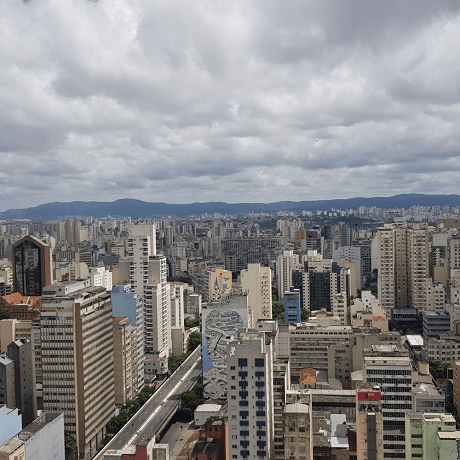

De Pátria para Pátria
Uma jornada épica do Kentucky ao Burundi, passando pelo País de Gales e pela Ucrânia

Conheça um pouco mais sobre a terra-natal de seus amigos on-line
Todo ser humano é um artista, um ser livre, convidado a participar da transformação e remodelação das condições, pensamentos e estruturas que formam e informam nossas vidas.
A cidade de Practicum reuniu profissionais de diversos cantos do mundo. Hoje, a Practicum Art Gallery tem o orgulho de apresentar as histórias e fotos de algumas das pessoas que dedicam seu tempo e esforço para fazer com que os futuros profissionais de tecnologia desta cidade sintam-se em casa. Cada um de nós tem uma história única sobre o lugar de onde viemos. Sinta-se à vontade para adicionar à nossa coleção sua própria história e uma obra de arte visual dedicada à sua cidade natal. Não importa de onde você vem, estamos felizes por você ser nosso vizinho.


Kiev, Ucrânia
 Compre esta obra de arte como NFT
Compre esta obra de arte como NFT
ARTISTA
Natalia Dolgushina, produtora de conteúdo
Kyev (mais conhecida como Kiev), capital da Ucrânia, é uma grande cidade localizada às margens do rio Dnipro. É claro que ninguém em sã consciência nadaria no rio, a menos que tenha crescido lá. E, nesse caso provavelmente já tentou em algum momento. Os verões são quentes aqui e os invernos são frios, mas o outono e a primavera são absolutamente incríveis.
A cidade em si é uma mistura de arquitetura pré-revolução, pós-guerra e soviética, toda ela salpicada de varandas modificadas. Se você estiver na margem direita do Dnipro, a paisagem é difícil de percorrer para quem anda de bicicleta ou usa salto. A margem esquerda é considerada muito menos interessante e prestigiosa, mesmo por pessoas que vivem na periferia da margem direita.
Criccieth, País de Gales
 Compre esta obra de arte como NFT
Compre esta obra de arte como NFT
ARTISTAS
Steffan Warren, editor-chefe
Kseniya Glagoleva, gerente de projetos
A ruína medieval do Castelo de Cricieth tem vista para a cidade abaixo de uma rocha que se projeta para o mar. Acredita-se que tenha sido construído por Llewelyn, o Grande, no século XIII. Cerca de 900 anos depois, a auto-intitulada "Pérola de Gales nas margens de Snowdonia" tornou-se um popular destino turístico durante os meses de verão.
Durante a curta caminhada pela estrada do castelo, você pode aproveitar o melhor sorvete do mundo na sorveteria Cadwalader. Cujo ingrediente secreto, segundo boatos, são algas marinhas de origem local. Outro ponto famoso da cidade é o fato de que Criccieth ganhou o prêmio "Wales in Bloom" por cinco anos consecutivos, por causa das espetaculares exibições florais existentes pela cidade. O local também a casa de David Lloyd George, o único galês a ocupar o cargo de primeiro-ministro do Reino Unido.
Berea, EUA
 Compre esta obra de arte como NFT
Compre esta obra de arte como NFT
ARTISTA
Travis Turner, autor e editor
Berea é uma pequena cidade localizada na parte central do Kentucky, cercada por belas florestas e campos. É conhecida como "a capital estadual do artesanato" e os visitantes encontrarão muitas oportunidades de compras: bijuterias artesanais, velas, artigos de madeira, galerias, ateliês de vidro etc. A cidade realiza um festival anual que celebra o "spoombread", um prato local feito com pão de milho e servido em uma colher de pau.
No entanto, Berea é provavelmente mais conhecida por sua faculdade local. Fundado em 1855, o Berea College foi o primeiro colégio no sul a ser racialmente integrado, bem como o primeiro a ser misto. De forma um tanto singular, a instituição não cobra mensalidades - cada aluno recebe uma bolsa integral de estudos.
Muramvya, Burundi
 Compre esta obra de arte como NFT
Compre esta obra de arte como NFT
ARTISTA
Grevisse Kenguruka, editor de technologia
Muramvya é uma das 18 províncias de Burundi. Na era do reino, Muramvya era a capital real e, em 2007, por causa de sua cena cultural e paisagem natural, ela foi adicionada à Lista Provisória do Patrimônio Mundial da UNESCO. A cidade está localizada no centro de Burundi, entre as capitais políticas e econômicas do país.
O clima é bastante frio à noite; mas, durante o dia, você pensaria que está no paraíso. A 2.665 metros (8.743 pés) acima do nível do mar, o Monte Teza é um dos lugares mais frios da província. Mas essa brisa fresca permite uma das maiores plantações de chá e café do país, que representam a maior parte das exportações do Burundi.
O Parque Nacional de Kibira, uma das maiores reservas de vida selvagem para macacos, abrange quatro províncias, incluindo Muramvya. Este Parque Nacional encontra-se na mais alta região das belas montanhas do Congo-Nile Divide, variando entre 1.550 e 2.660 metros de altitude. Está repleta de uma bela vegetação e é fonte para os vários rios e riachos que fornecem água para todo o país.
São Paulo, Brasil
 Compre esta obra de arte como NFTARTISTA
Mônica Wanderley, jornalista
Fundada por padres jesuítas há mais de 450 anos, São Paulo tornou-se a principal capital econômica e cultural da América Latina, abrigando uma população de 12 milhões de pessoas apenas na cidade de São Paulo. Ela é o lar de diversas colônias de estrangeiros, como árabes, coreanos, armênios e japoneses, e também de brasileiros que vêm de outras partes do país buscando melhorar sua condição de vida.
Apesar de possuir os problemas característicos de uma cidade grande, como violência e alto custo de vida, viver em São Paulo proporciona experiências únicas, especialmente para quem gosta de cultura e entretenimento. A cidade recebe os principais shows, exposições e apresentações nacionais e internacionais, além de ter uma grande diversidade gastronômica.
Visite-Nos
Durante todo o ano
Galeria de Arte Practicum
404, Avenida Tim Berners-Lee.
Comprar bilhetes